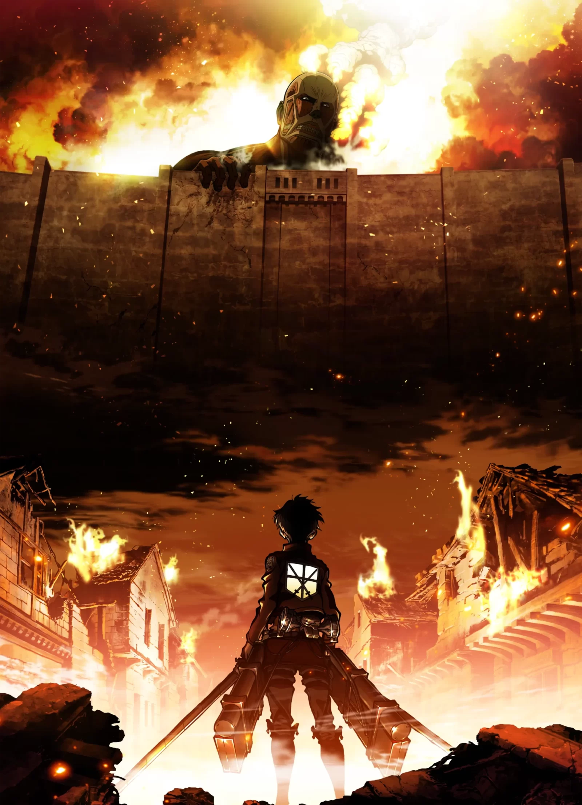
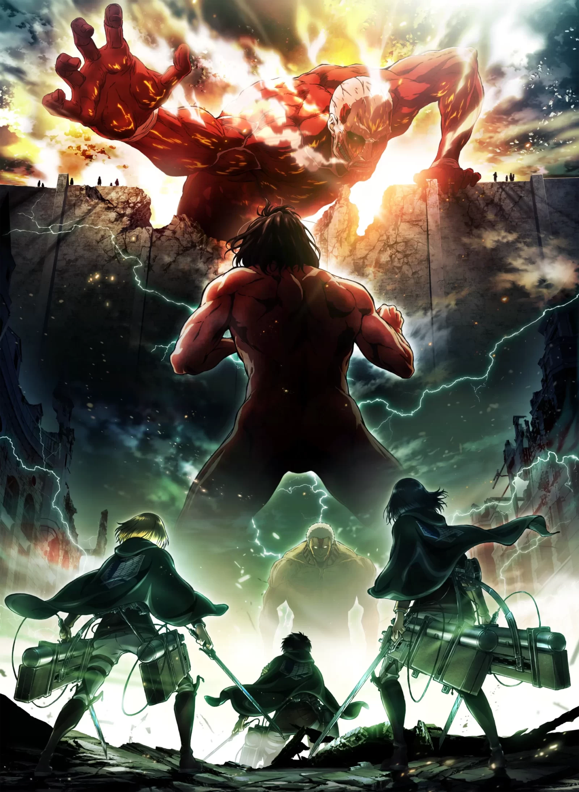
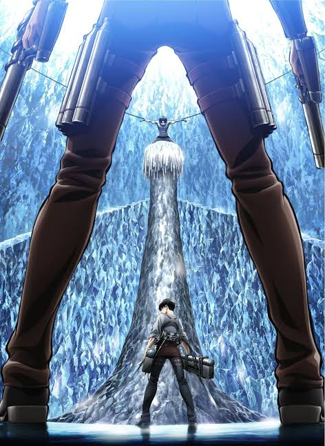
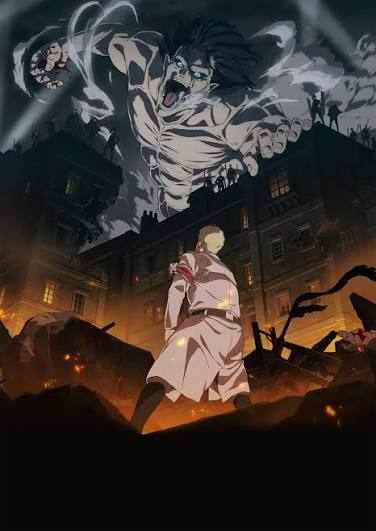

Attack on Titan, also known as Shingeki no Kyojin, is a Japanese anime television series based on the manga written and illustrated by Hajime Isayama. The anime premiered in April 2013 and follows the story of humanity's struggle for survival against mysterious giant creatures known as Titans.
The story follows Eren Yeager, Mikasa Ackerman and Armin Arlert, three childhood friends whose lives change after their hometown is attacked by Titans. After this event, they join the military and become involved in a series of conflicts that gradually reveal the secrets behind the Titans, the walls and the world outside them.
Throughout the series, the story expands from a fight for survival into a much larger conflict involving freedom, war, politics, identity and the consequences of humanity's choices.
The original video animation (OVA) episodes are special episodes that were not aired during the original season but released alongside select volumes of the manga. Before the official English airing of all OVAs in May and June of 2022, OVAs 1, 2, 4, and 5 had been officially released in English, with subs, included in the English special editions of Volumes 17 - 20. Explore them:

The beginning of Eren, Mikasa and Armin's journey and humanity's struggle against the Titans.

New threats appear as the Scouts uncover more secrets about the Titans and the walls.

The Scouts face political conflicts while discovering important secrets about humanity's past.

The end of the anime. The story expands beyond the walls and reaches its final conflict.